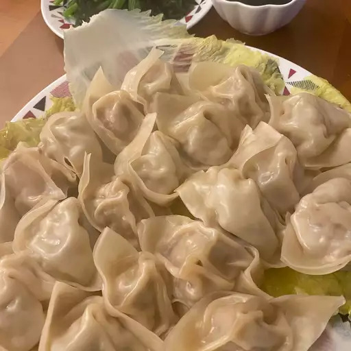

Dumplings

These tasty steamed pork dumplings make a perfect appetizer for a party or you
can serve them as a main dish. Serve with hoisin sauce, hot Chineese style mustard,
and toasted sesame seeds.
If you're looking for the best steamed pork dumplings recipe on the internet, you've
come to the right place. These pork dumplings are easy to assemble and steam as they
are to eat.
Ingredients
- 100 Dumpling Wrappers
- 1.75 pounds ground pork
- 1 Tablespoon minced fresh ginger root
- 4 cloves garlic, minced
- 2 tablespoons thinly sliced green onion
- 4 tablespoons soy sauce
- 3 tablespoons sesame oil
- 1 egg, beaten
- 5 cups finely shredded Chineese Cabbage
Directions
- In large bowl, combine the pork, ginger, garlic, green onion, soy sauce,
sesame oil, egg, and cabbage. Stir until well mixed.
- Place 1 heaping teaspoon of pork filling onto each wonton skin. Moisten
edges with water and fold edges over to form a triangle shape., Roll edges
slightly to seal in filling. Set dumplings aside on a lightly floured surface
until ready to cook.
- Arrange dumplings in a covered bamboo or metal strainer so they don't
touch to prevent them from sticking together; steam for 15 minutes, or
until pork is cooked through.
- Serve hot and enjoy!
Home